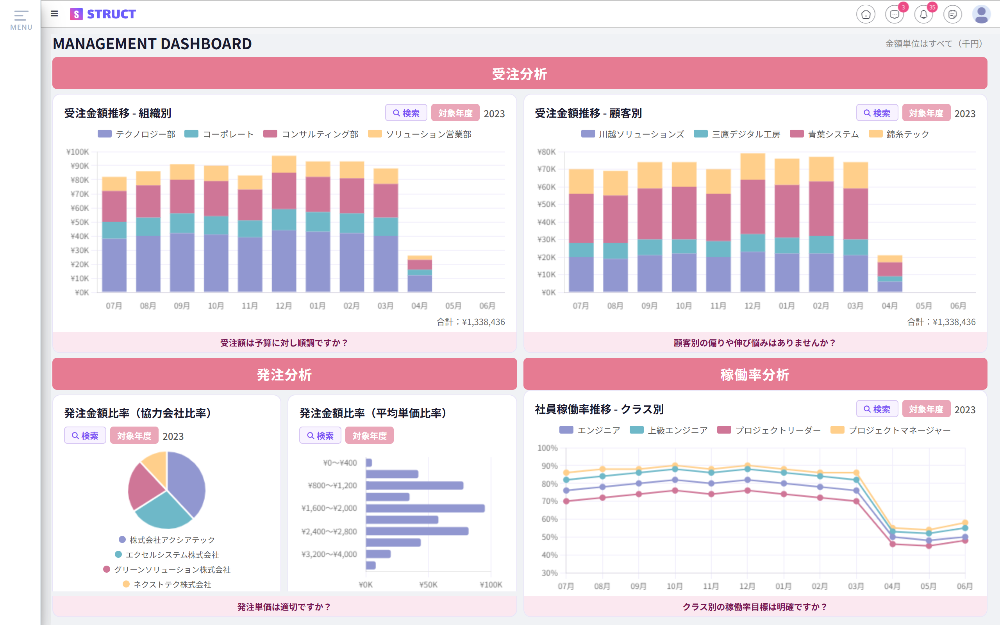
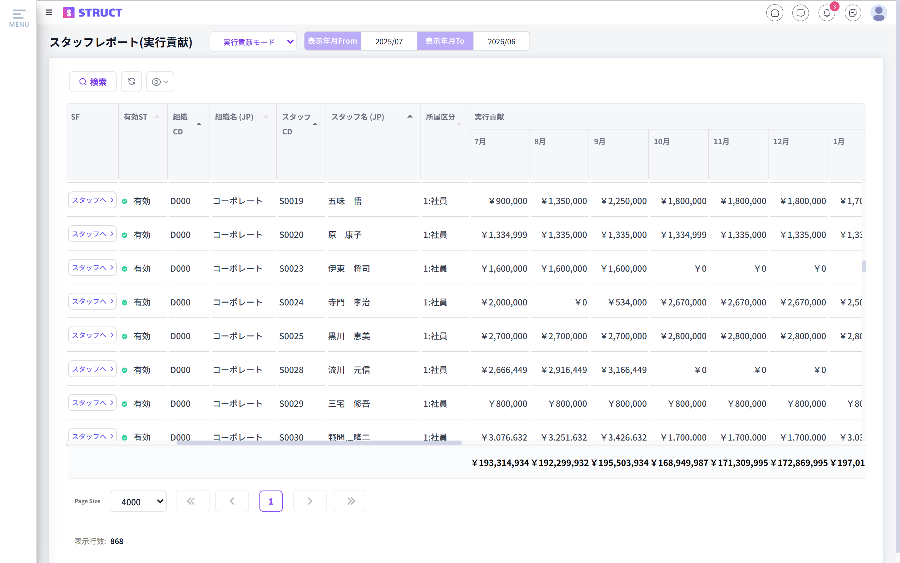
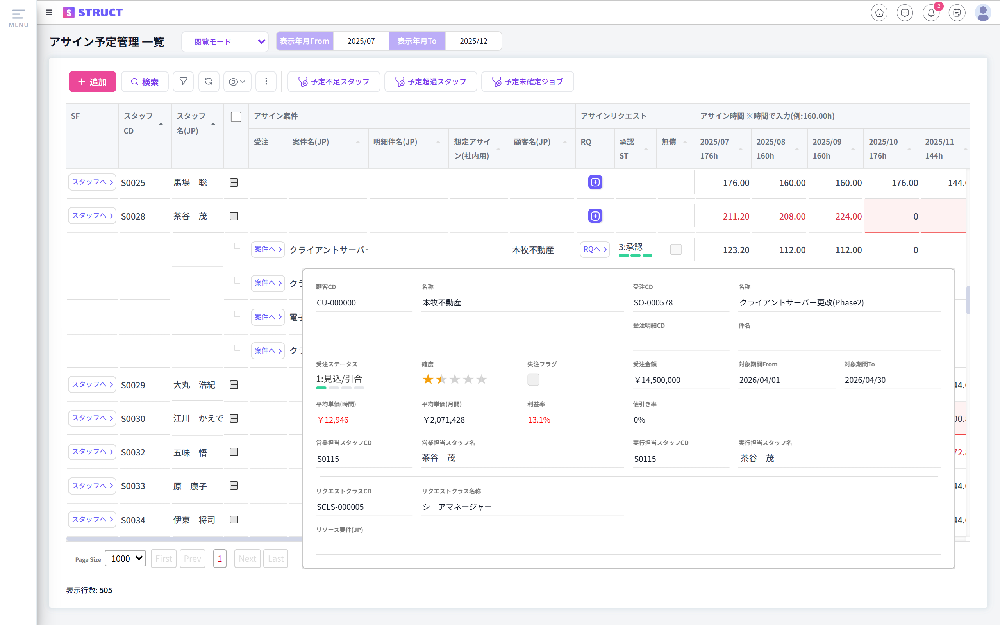
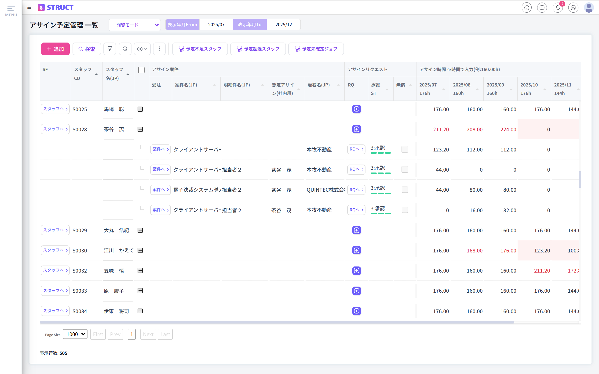
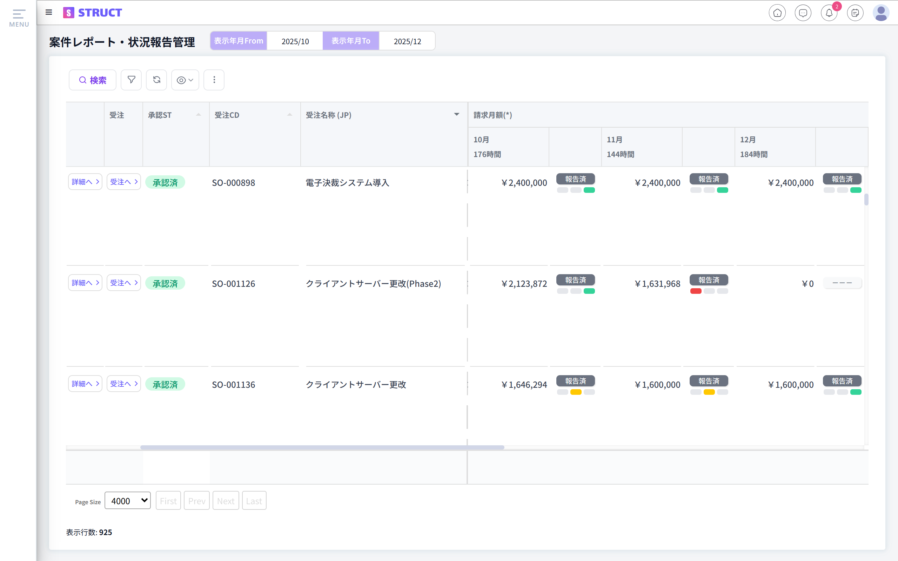
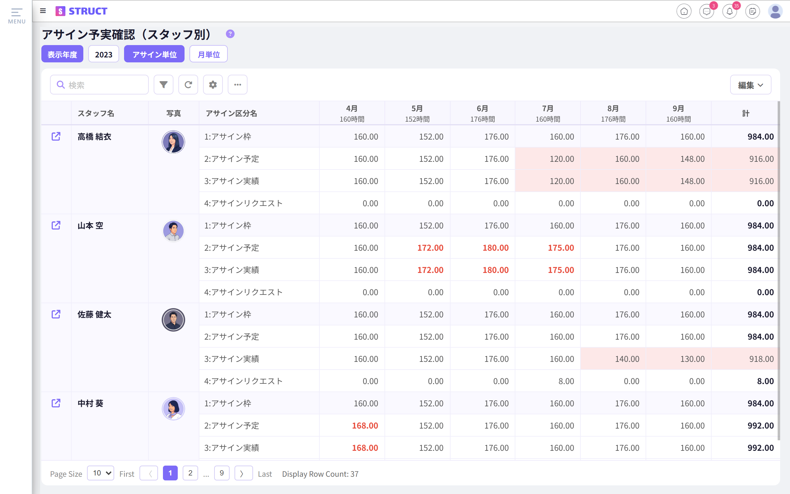
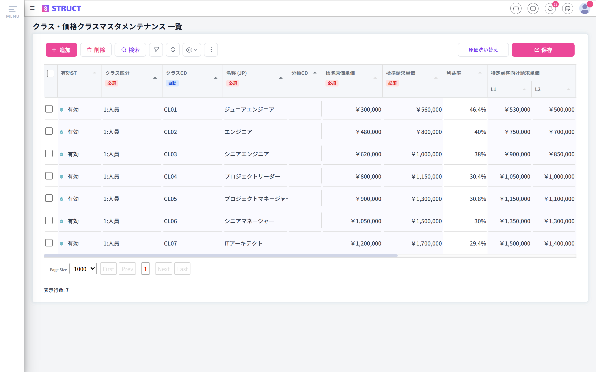
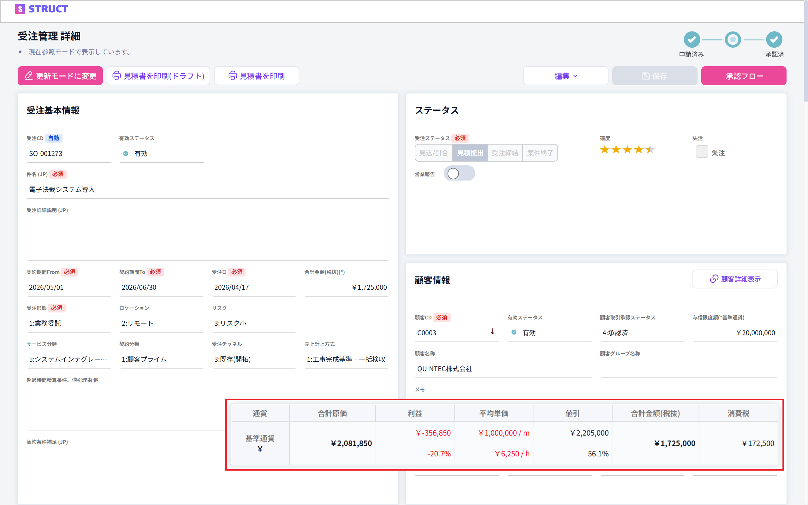
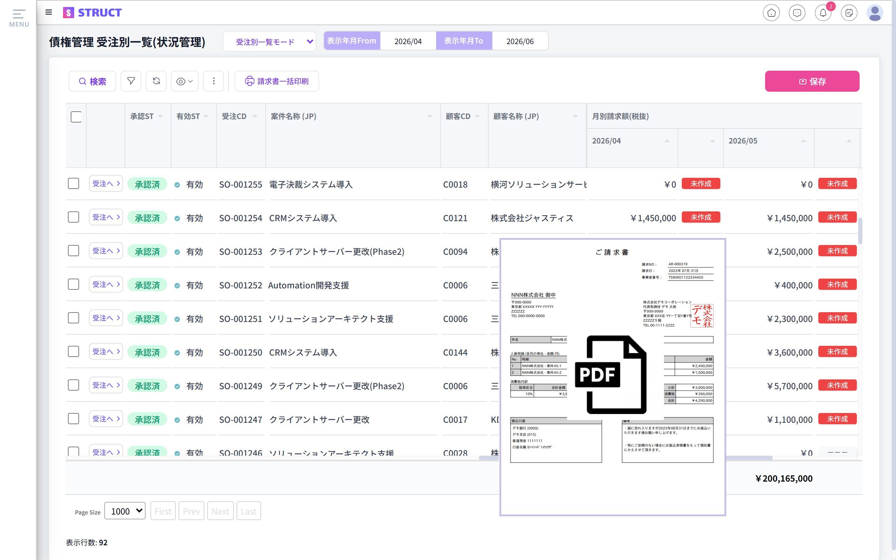

企業の成長を支える
オールインワンソリューション。
STRUCTはこれまでEXCELで行っていたようなアサイン管理から複数のシステムで管理されていた受注管理や経費精算まで統合されたワンストップソリューションで解決します。
事業KPIをリアルタイムに可視化
販売、購買から勤怠、経費、評価まですべてのデータがSTRUCT上に統合されているためシステム利用開始後すぐに統合されたデータのリアルタイム照会が可能です。事業に欠かせないKPIを搭載したダッシュボードが標準で準備されています。
・組織別月別売上／各種売上構成比
・組織別月別スタッフ数／スタッフ原価／稼働率
・組織別月別協力会社数／外注費
・残業時間／勤怠状況／スタッフ経費／評価
など多数

案件収支、組織収支をリアルタイムにレポート
把握の難しい収支レポートをいつでもすぐに参照可能です。案件別収支、スタッフ別収支、組織別収支など様々な切り口でのレポートが標準搭載されています。

入れ替わりが早く複雑なアサイン調整を簡単に実現
多くの企業がEXCEL管理しているアサイン調整。この業界では、引合案件があった場合、そこに提案するスタッフが見つかるかどうかで提案の可否が決定するため、案件や候補となる空きスタッフ、協力会社のスタッフの入れ替わりが早いのが特徴です。この情報管理をクイックかつ合理的に行うための機能がSTRUCTには準備されています。
アサイン依頼から決定までを仕組化
スタッフをアサインしたいプロジェクトマネジャーは、アサインリクエストをアサイン管理者へ申請します。アサイン管理者は、組織全体のアサイン予定や各プロジェクトの業務内容・採算性等を見ながら承認します。アサイン業務の標準化と仕組化により、限りあるリソースの最適配置を実現します。

全スタッフのアサイン予定を可視化
全スタッフのアサイン予定は一覧で管理され、誰がいつからどのプロジェクトにアサインされるのかを容易に把握可能になります。また、予定の不足や超過はハイライト表示され、一目で異常を検知できます。

稼働可能なスタッフの職務経歴書を即座に把握
スタッフはSTRUCTに職務経歴を登録します。この際、自己紹介動画も登録することができます。プロジェクトマネジャーは、スキルなどのキーワードで全スタッフから最適なスタッフを検索することができます。また、稼働可能なスタッフの職務経歴書・動画を参照することで、アサインまでの時間を短縮することが可能です。

リスクの早期発見
案件状況管理では、各プロジェクトマネジャーからの定期的なリスク報告を仕組化します。報告されるリスク：案件別の遅延や品質リスク、顧客との関係性、案件継続見通し 等。事後対策になりがちな顧客対応をリスク検知により改善します。

アサイン計画と実績の乖離を検出
ワンストップソリューションであるSTRUCTにより、アサイン計画と実績の突合をワンクリックで実現します。計画と実績にGAPが存在する場合、ハイライト表示されることで、アサイン計画と実績の乖離解消を仕組化することが容易になります。

スタッフクラス別の販売単価・原価管理
STRUCTにはスタッフクラスというスタッフを分類するための項目があります。販売単価と原価はスタッフクラス別に管理されます。また、販売単価は顧客グループ別にスタッフクラス毎に設定することができます。

利益率・最低単価アラートで改善活動を強化
STRUCTでは、あらかじめ規定の利益率・最低単価を設定しておくことで、規定を下回る内容にアラートを発報することができます。規定を下回ったケースはハイライト表示されます。受注時点だけでなく受注後のフォローまで含めた改善活動の仕組みとして機能します。

ワンクリック請求書発行・マトリクス管理で請求漏れを防止
顧客向け債権はSTRUCT上で承認管理がおこなわれます。承認後、担当者はワンクリックで請求書を発行することができます。案件別月別にマトリクス表示する管理機能により、請求書発行漏れや債権計上漏れを一目で発見することが可能です。
